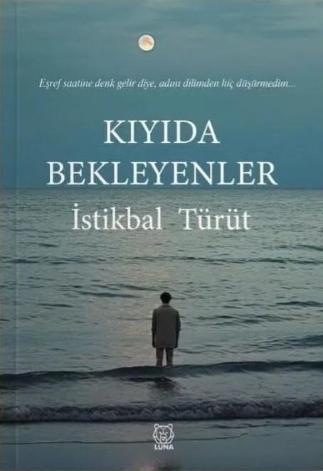

I am a Data Architect, Database Specialist, and AI/ML Engineer based in Toronto, Canada. Rooted in a prestigious educational foundation from Boğaziçi University to Humber Polytechnic's AI program, I engineer scalable database systems while pursuing creative expression as a published poet and author.
Select a dimension to explore projects, credentials, and technical capabilities.
Building automation pipelines, scraping engines, and generative AI interfaces that optimize operations.
Active SectionManaging high-availability database environments, performance tuning, cloud migrations, and ETL processes.
Click to ViewA B.S. & M.S. chemist with specialized college teacher training, mastering the art of explaining complex logic simply.
Click to ViewAuthor of 'Kıyıda Bekleyenler'. Merging poetry with code through automated video and visual content generation.
Click to ViewWhite-label AI agents and chatbot ecosystems delivering smart business automations, client dashboards, and custom chatbot integrations for local small businesses.
AI-assisted website generation platform. Instantly auto-generates category-specific, fully styled business websites (restaurants, clinics, gyms) based on visual themes and onboarded information.
Voice-first mobile productivity application. Built for instant, one-touch audio note recording with AI-assisted bilingual (EN/TR) editing, autosave, and a driving-friendly workspace workflow.
Business-centric social media network. Designed as a hybrid platform connecting local commercial ecosystems with rich feeds, categories, page followings, and multi-user authentication.
Modern workflow optimization SaaS. A clean task management and CRM tool engineered to maximize small business productivity and minimize operational friction.
A data-driven consulting firm and SaaS platform. Delivers smart web solutions, customized business dashboards, cloud integrations, and database performance optimization.
White-label domain registration and infrastructure hosting platform. Features WHMCS billing integration, OpenSRS API automation, DNS management, and automated reseller ecosystems.
A structured data archiving and indexing platform. Designed for long-term document preservation, importing clean JSON datasets from social archives, and multi-lingual document parsing.
"A teacher is a professional learner." This philosophy defines my transition into technology. Yoked with an Integrated B.S. & M.S. in Teaching Chemistry from Turkey's top institution, **Boğaziçi University**, I spent years designing curricula, teaching advanced Grade 11/12 Chemistry (SCH3U/SCH4U) and High School Math (MPM1D/MPM2D) in Ontario, and researching pedagogical methods.
In Canada, I graduated from the **College Teachers Training Postgraduate Program** at George Brown College to align my academic skills with the Canadian educational landscape.
Personal brand, writing archive, and Turkish poetry publishing platform. A custom WordPress platform focused on long-form essays, social observations, and educational reflections. Features custom WordPress plugin integrations, SEO-optimized poem pages, and a structured archive engine managing thousands of writings.
An automated media pipeline built in Python using Pillow and moviepy/ffmpeg to extract poems from text files, render high-aesthetic frosted glass (glassmorphic) poetry cards with random AI backgrounds, generate 15-second MP4 video reels with soft backgrounds and music, and automatically post them to Instagram and Facebook Page APIs using Graph APIs.
A physical 169-page Turkish poetry collection representing the shores of human emotion, waiting, hope, and the stormy grey tides of life. Published by Luna Yayınları and sold across major retailers.
Tracing my evolution from Chemistry, to Advanced Databases, to Artificial Intelligence.
High School — Istanbul
One of Turkey's oldest, most traditional, and highly competitive elite educational institutions. Nurtured my scientific curiosity.
Integrated B.S. & M.S. in Teaching Chemistry, Education
Acquired a solid analytical, mathematical, and pedagogical foundation from Turkey's top-tier university. Developed deep problem-solving skills.
Postgraduate Program — College Teachers Training for Internationally Educated Professionals
Aligned my educational skills with the Canadian academic standards and college curricula, focusing on public speaking and technical education.
Ontario Professional Teaching Certification
Certified member of the Ontario College of Teachers (OCT), the regulatory body for the teaching profession in Ontario. Authorized to deliver high school Chemistry and Mathematics curricula, ensuring professional pedagogical standards in secondary education.
Graduate Certificate — Information Technology Solutions
Transitioned into software engineering. Mastered application structures, C# backend development, React.js UI implementation, and database systems.
Postgraduate Degree — Database Application Developer
Specialized in robust data layer systems. Studied advanced relational databases, query optimization, NoSQL models (MongoDB), and ETL pipelines.
Diploma — Advanced Database Administrator
Intensive 50-week enterprise database program. Covered Linux servers, high-availability setups, backups via Oracle RMAN, SQL Server DBA, and Microsoft Azure Cloud migrations.
Postgraduate Degree — Marketing Management (Digital Media Program)
Mastered Content Marketing and Search Engine Optimization (SEO). This critical business and media framework inspires the outreach architecture of Nora Agents.
Graduate Certificate — Artificial Intelligence With Machine Learning
Engineering the future. Studying Machine Learning algorithms, deep learning models, data visualization pipelines, and predictive analytics.
Beyond algorithms and classrooms, I believe in being grounded in the real world. My diverse life experiences feed directly into my software architecture:
Taught me how to connect with people from all walks of life. Navigating GTA cities (Mississauga, Markham, Toronto, Oakville) gave me an intimate understanding of local restaurants and small businesses, which ultimately inspired me to build Nora Agents to help them automate bookings.
Gave me deep, hands-on experience in business logic, product metrics, arbitrage formulas, and market analysis, which I use to design high-performance retail calculations and database tracking tools.
"A great systems engineer is not someone who sits in an isolated room; it is someone who understands real-world flows, real businesses, and human connections."

A physical 169-page Turkish poetry collection representing the shores of human emotion, waiting, hope, and the stormy grey tides of life. Published by Luna Yayınları and sold across major retailers.
Whether you want to discuss AI integration, database performance, curriculum design, or literature — my inbox is always open.
📍 Toronto GTA, Ontario, Canada